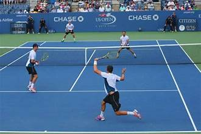

Favourite Sports
Football

Tennis
- Tennis became my passion when I first gripped a racket in elementary school, the satisfying thud of the ball against the strings resonating with me.
- Despite the temptation of high school tennis, academic priorities took precedence, leading me to appreciate the sport through casual games with friends.
1 / 3

Last Moment of Tennis final match 2023
2 / 3

4 players playing Tennis (2 on each side)
3 / 3
Best Kick of a female Football Player
Cricket
- My journey in cricket commenced during my early school years, finding solace in the rhythmic sound of the ball meeting the bat.
- With four distinct cricket bats and a dedicated bag, I immerse myself in the elegance of cricket, a sport that has been my constant companion.